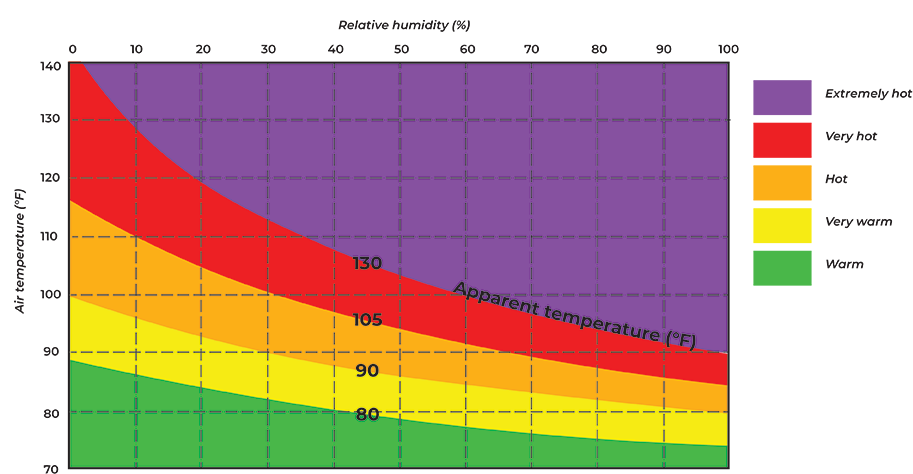

Ever wonder why it feels hotter than the thermometer reads?
Heat index is a value measuring apparent temperature, how hot it actually feels to the human body. Air temperature and relative humidity are used to calculate heat index. With little humidity, the temperature the body feels isn't much different from the air temperature. But as temperatures rise, even small amounts of humidity can pose a threat and increase the likelihood of heat disorders and illnesses.
BY AMINA LAMPKIN

**Heat index values were formulated from shady locations with light winds. According to the National Weather Service, direct sunlight can increase the heat index by 15° F.
Source: National Oceanic and Atmospheric Administration